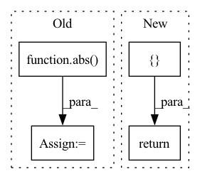

Pattern ID :21055
Before Change
bin_low = bins[i]
bin_high = bins[i+1]
d1 = abs(bin_low - target.item())
d2 = abs( bin_high - target.item())
output = torch.tensor(output,dtype=torch.float32, device=self.device,requires_grad=True)
target = torch.tensor(target,dtype=torch.float32, device=self.device, requires_grad=True)
bin_high = torch.tensor(bin_high,dtype=torch.float32, device=self.device, requires_grad=True)
bin_low = torch.tensor(bin_low,dtype=torch.float32, device=self.device, requires_grad=True)After Change
def forward(self,outputs,targets,bins,batch_size):
loss = torch.zeros([batch_size],requires_grad= True).to(self.device)
bin_low = torch.zeros([batch_size],requires_grad= True).to(self.device)
bin_high = torch.zeros([ batch_sizereturn loss.mean()
In pattern: SUPERPATTERN
Frequency: 3
Non-data size: 4
Instances Fragment ID: 67698428
Project Name: atmacvit/bincrowd
Commit Name: acb86088468ea073cb8983f27fa97db906f87933
Time: 2021-07-20
Author: khamkarmansi@gmail.com
File Name: optimization/log_loss.py
M Class Name: Log_Loss
N Class Name: Log_Loss
M Method Name: forward(5)
N Method Name: forward(4)
M Parent Class: Module
N Parent Class: Module
M File Name: optimization/log_loss.py
N File Name: optimization/log_loss.py
M Start Line: 12
M End Line: 39
N Start Line: 9
N End Line: 30
Before Change
T_c3_c0 = np.eye(4)
T_c3_c0[:3, 3] = P3[:3, 3] / P3[0, 0] // Divide by focal length to get translation in meters
b = abs( T_c3_c0.bmm(se3_inv(T_c2_c0))[0, 3])
return {"K2": K2, "K3": K3, "b": b, "T_c2_c0": T_c2_c0, "T_c3_c0": T_c3_c0}
def parse_poses(self, filename, calibration):After Change
T_c3_c0 = np.eye(4)
T_c3_c0[:3, 3] = P3[:3, 3] / P3[0, 0] // Divide by focal length to get translation in meters
return { "K2": K2, "K3": K3, "T_c2_c0": T_c2_c0, "T_c3_c0": T_c3_c0}
def parse_poses(self, filename, calibration):
read poses file with per-scan poses from given filename
Fragment ID: 67698431
Project Name: utiasasrl/hero_radar_odometry
Commit Name: 4eb1bdf7c40f496a3cd9fb79125911fcbf880f89
Time: 2020-08-17
Author: mona.gridseth@robotics.utias.utoronto.ca
File Name: datasets/kitti.py
M Class Name: KittiDataset
N Class Name: KittiDataset
M Method Name: parse_camera_calibration(2)
N Method Name: parse_camera_calibration(2)
M Parent Class: Dataset
N Parent Class: Dataset
M File Name: datasets/kitti.py
N File Name: datasets/kitti.py
M Start Line: 261
M End Line: 272
N Start Line: 260
N End Line: 269
Before Change
// objective function
// f must be a scalar. not 1 by 1 matrix
// f = (abs(u))[0][0]
f = 2*abs( u)
// external_grad = torch.tensor([[1.]])
// f.backward(gradient=external_grad)
f_grad = f_gradStruct()
f_grad.u = autograd.grad(f,f)
// // absolute value
// if u >= 0:
// f_grad.u = 1After Change
ce = None
ce_grad = None
return [ f,ci,ci_grad,ce,ce_grad Fragment ID: 67698433
Project Name: sun-umn/pygranso
Commit Name: 0d208adde71a70226c1176ae83563c442c16967f
Time: 2021-07-19
Author: liang664@umn.edu
File Name: Python_version/examples/autodiff_ex6/combinedFunction.py
M Class Name: AnonimousClass
N Class Name: AnonimousClass
M Method Name: combinedFunction(1)
N Method Name: combinedFunction(1)
M Parent Class:
N Parent Class:
M File Name: Python_version/examples/autodiff_ex6/combinedFunction.py
N File Name: Python_version/examples/autodiff_ex6/combinedFunction.py
M Start Line: 22
M End Line: 50
N Start Line: 22
N End Line: 54